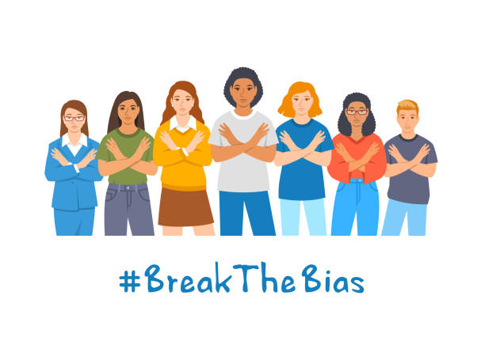
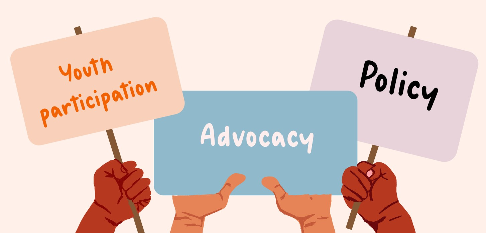

Empowering Women in Nepal: Making Things Fair
There are very important role of women in the development of a country. If
there are educated and independent women in a country only theb it can
progress rapidly. We say that the women are not powerful. They need to be
empowered. The word'Women Empowerent' means the progress of women. It
gives equal rights and oppurtunities to the women. It also helps women to
take their own decision of life. In the beautiful land of Nepal, helping
women is like taking a big journey to make things fair for every woman.
It's about giving each woman a chance to do well and be a part of our
society. It's not just a plan; it's a promise to break the rules that hold
women back. This promise aims to help women be strong and do great things
for our country.
Education for All

This journey starts with making sure every girl gets good education.
Education is not just about books; it's like a magic power that helps
women think for themselves, make good choices, and be a part of making
our country better.
Being Independent

To make this journey happen, we need to make sure women can work and
earn money on their own. When women have their own money, they can
make choices and help their families. It's not just about jobs; it's
about giving women the power to decide things for themselves and make
our country stronger.
Changing What People Think
We also need to change what people think about what jobs women can do.
Women should be able to do any job they want, whether it's in science,
art, sports, or anything else. Breaking these old ideas about what women
can or cannot do helps everyone and lets women show their talents in our
society.
Equal Opportunities in Leadership
To make this journey complete, we must give women equal chances to be
leaders. When women are part of making decisions, it makes our country
better. It's not just about having women in charge; it's about having
different ideas that help everyone in our society.

Advocacy and Policy Changes
To keep our promise, we need to speak up for women's rights and change the
rules that hold them back. Making sure women have a say in decisions,
changing laws to protect their rights, and supporting fairness help create
a Nepal where every woman has an equal chance.

Government Efforts
In the context of Nepal, government enforcement of fair practices involves
actively creating and enforcing laws that protect women's rights and
promote equality. This includes supporting educational programs that
specifically focus on providing opportunities for girls and women,
promoting equal opportunities for women in leadership roles across various
sectors, and addressing and penalizing discriminatory practices that hold
women back. However, it's essential to exclude any actions that may
perpetuate gender inequality or hinder women's progress. The government's
efforts should actively work towards creating an environment where women
can thrive without facing discrimination.
Thus, women empowerment is necessary. It removes gender inequality. On
account of women empowermen, a greate change is seen in the position of
women. But even there is also a need to change the thinking of people
aginst women .